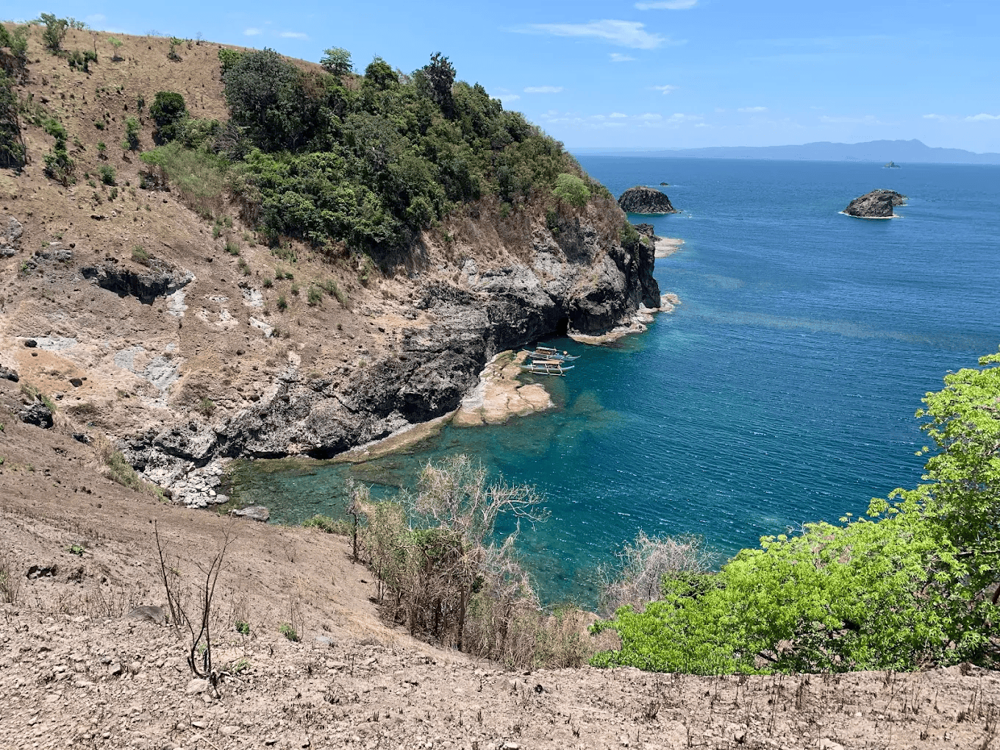
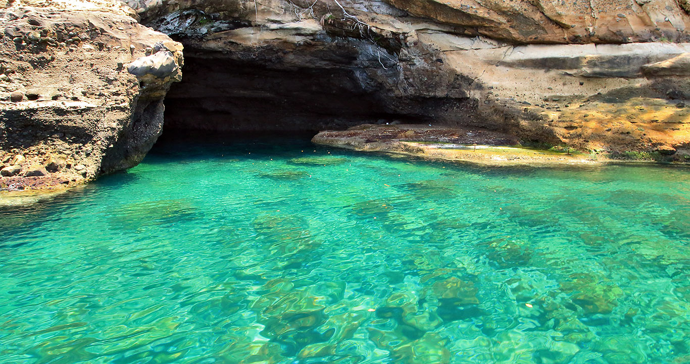

Preserving nature through sustainable travel.

A series of rugged coves shaped like a hand. Showcasing natural rock formations and marine life through cliff diving, kayaking, and snorkeling.

A sea cave accessible by boat, with crystal-clear waters and dramatic rock formations. A perfect spot for those seeking serenity and natural art.